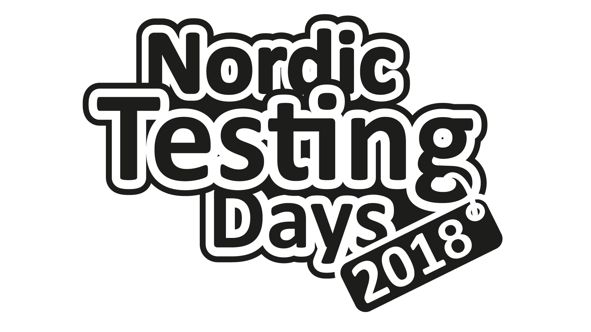

how this tester
learned to write code

Joep Schuurkes
Joep Schuurkes
@j19sch
slides at https://j19sch.github.io
three
stories
how I got started
how I impressed myself for the first time
how I finally learned some dev skills
before I got started


how I got started
Perl (2011)
while (<$tpl>) {
my $tplln = $_;
chomp $tplln;
foreach my $group (keys %sfile) {
if ($sfile{$group}[0] == $i) {
if (index ($tplln, $sfile{$group}[1]) != -1
&& $sfile{$group}[2] eq 'skip')
{
$tplln = "";
} else {
$tplln =~ s{$sfile{$group}[1]}{$sfile{$group}[2]};
}
}
}
print $req $tplln or die "Kan niet schrijven naar $req.";
}
What would PerlMonks say?

I can create something
that's useful to me
how I impressed myself
for the first time
VBA for Excel (2013)
'Apply filter criteria on columns to be filterd
Dim j As Integer
For j = LBound(ArrColNames) To UBound(ArrColNames)
If InStr(ArrCritsRaw(j), ";") <> 0 Then
' Multiple criteria present, so only select possible
Dim ArrSplit() As String
ArrSplit = Split(ArrCritsRaw(j), ";")
Selection.AutoFilter Field:=ArrColNames(j), Criteria1:=ArrSplit,
Operator:=xlFilterValues
Else
' Single criterium present, so select, deselect, empty, notempty,
' greater/smaller than possible
Selection.AutoFilter Field:=ArrColNames(j), Criteria1:=ArrCritsRaw(j),
Operator:=xlFilterValues
End If
Next j
small change
test it
repeat
how I finally learned
some dev skills
Python (2015)
def test_create_new_app(app_name):
print "Creating project with name " + app_name
project_id = ProjectsAPI.create_new_app_sync(username, apikey, app_name)
print "Project with id " + str(project_id) + " created."
check_project_details_in_sprintr(project_id)
check_project_and_svnproperties_on_teamserver(project_id)
check_events_in_platform_analytics(project_id)
def check_project_and_svnproperties_on_teamserver(projectid):
svnrepo_uri = teamserver_url + projectid
assert (teamserver.check_if_repo_exists(svnrepo_uri) is True)
assert (teamserver.check_if_repo_contains_mpr(svnrepo_uri, app_name) is True)
check_if_svn_properties_are_set(svnrepo_uri, projectid, app_name)
check_if_silent_conversion_svn_revision_property_is_set(svnrepo_uri)
| step 0 | working code |
| step 1 | clean code |
clean code
names
structure
refactoring
starting points
sites


games


books


first steps
build something that's useful to you
take small incremental steps
write clean code
next steps
Python (2017)


Python (2018)

understanding
an existing code base
reason through the code
instead of testing it
but most importantly
you have
two testing super-powers
that will help you
super-power #1:
being ok
with not knowing
¯\_(ツ)_/¯